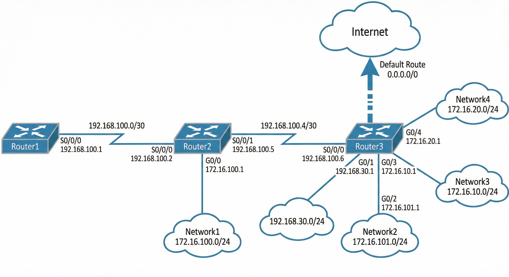
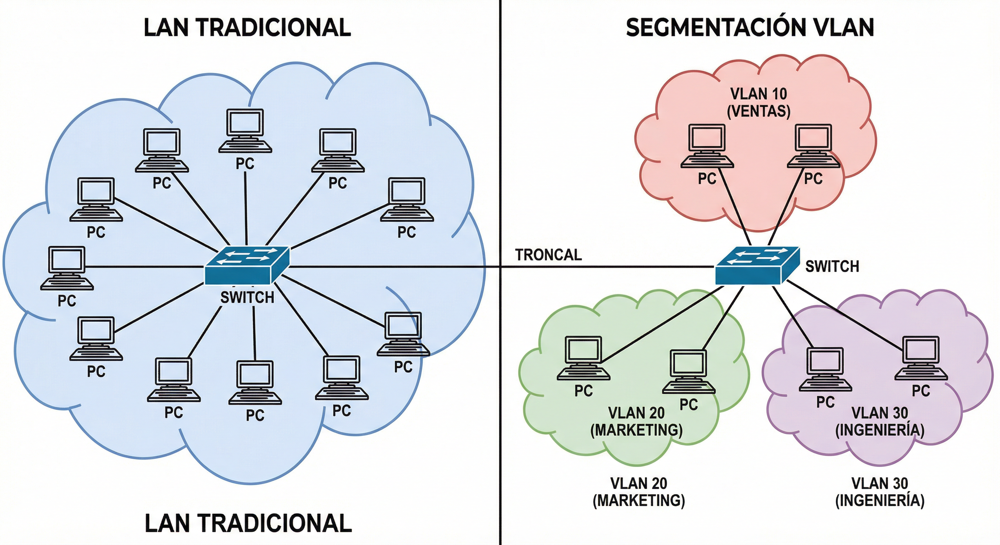
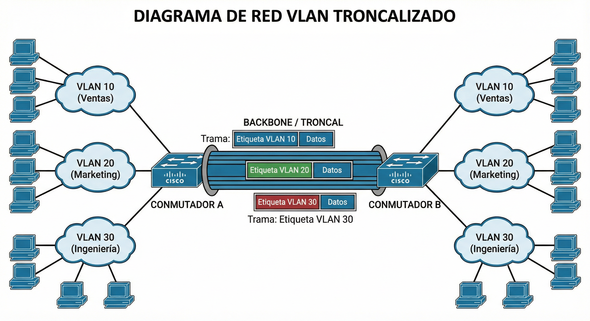

Tema 6. Enrutamiento, subnetting y VLANs¶
En este tema diseñamos la red lógica: dividimos en subredes, resumimos rutas (supernetting), configuramos enrutamiento (sobre todo estático) y segmentamos con VLANs (access, trunk, 802.1Q).
Primera clase
Empieza por el cuestionario inicial. No hace falta estudiar el tema completo antes: el cuestionario sirve para ver qué sabes al empezar.
Propuesta didáctica¶
Trabajamos los RA3 y RA4 del módulo Redes de área local (0225):
RA3. Interconecta equipos en redes locales cableadas describiendo estándares de cableado y aplicando técnicas de montaje de conectores.
RA4. Instala equipos en red, describiendo sus prestaciones y aplicando técnicas de montaje.
Criterios de evaluación (selección)¶
RA3
- CE3a: Se ha interpretado el plan de montaje lógico de la red.
- CE3f: Se ha verificado la conectividad de la instalación.
RA4
- CE4g: Se han identificado los protocolos.
- CE4h: Se han configurado los parámetros básicos.
- CE4j: Se han creado y configurado VLANS.
Contenidos¶
- Subnetting paso a paso (bits prestados, incremento, rangos).
- Supernetting / agregación CIDR.
- Enrutamiento estático y dinámico (visión); tabla de rutas; ruta por defecto.
- VLANs: access / trunk, etiquetado 802.1Q, idea de comunicación inter-VLAN.
Programación de aula (orientativa, ~16–18 h)¶
| Sesiones | Contenidos | Actividades |
|---|---|---|
| 1 | Presentación + cuestionario | Cuestionario |
| 2–5 | Subnetting | AC601–AC604 |
| 6–7 | Supernetting | AC605, AC606 |
| 8–10 | Rutas estáticas y default | AC607, PR601 |
| 11–13 | VLANs, access/trunk, 802.1Q | AC608, AC609 |
| 14–16 | Packet Tracer VLANs | PR602 |
| 17–18 | NetAcad: enrutamiento / VLAN (prep. certificación) | PR603 |
| 17–18 | Repaso | — |
Cuestionario inicial¶
Antes de empezar — responde con lo que sepas
- ¿Qué es el subnetting y para qué sirve?
- ¿Qué es una superred?
- ¿Qué diferencia hay entre enrutamiento estático y dinámico?
- ¿Qué información tiene una tabla de rutas?
- ¿Qué es una VLAN?
- ¿Qué es un puerto troncal (trunk)?
- ¿Para qué sirve el etiquetado 802.1Q?
Soluciones
Las soluciones se trabajan en clase o se publican en Aules cuando proceda.
Subnetting¶
Subnetting = dividir una red en subredes más pequeñas tomando bits prestados de la parte de host. El prefijo CIDR aumenta (máscara más larga).
Motivos: reducir dominios de broadcast, organizar por departamentos, aplicar políticas y seguridad, planificar crecimiento.
Ejemplo: 8 subredes desde /24¶
Red base 192.168.0.0/24 → 3 bits prestados → /27.
- Subredes: (2^3 = 8)
- Tamaño de bloque: (2^5 = 32) → 30 hosts por subred
- Incremento en el último octeto: 32
| Subred | Red | Hosts válidos | Broadcast |
|---|---|---|---|
| 1 | 192.168.0.0 | .1 – .30 | .31 |
| 2 | 192.168.0.32 | .33 – .62 | .63 |
| 3 | 192.168.0.64 | .65 – .94 | .95 |
| 4 | 192.168.0.96 | .97 – .126 | .127 |
| 5 | 192.168.0.128 | .129 – .158 | .159 |
| 6 | 192.168.0.160 | .161 – .190 | .191 |
| 7 | 192.168.0.192 | .193 – .222 | .223 |
| 8 | 192.168.0.224 | .225 – .254 | .255 |
Pasos sistemáticos¶
- Bits a prestar (b): menor (b) con (2^b \ge N) subredes pedidas.
Ej.: 30 subredes → (2^5 = 32) → 5 bits. - Nuevo prefijo = prefijo base + (b) (p. ej.
/24+ 5 →/29). - Incremento = (2^{(\text{bits de host restantes})}) en el octeto que varía.
- Red de la subred (k) = base + ((k-1) \times) incremento.
- Broadcast = siguiente red − 1; hosts = red+1 … broadcast−1.
- ¿A qué subred pertenece una IP? en el octeto que varía: ((\text{valor} \div I) \times I) (división entera).
Ej.:172.16.0.0/21, incremento 8; IP172.16.118.50→ subred172.16.112.0/21.
Fórmulas: subredes = (2^{bits prestados}); hosts/subred = (2^{bits host} - 2).
En cada subred no se asignan la dirección de red ni la de broadcast. Hoy suele usarse todo el rango de subredes (la restricción antigua de RFC 950 está en desuso).
Ventajas y coste
Subnetting mejora administración y seguridad, pero consume dos IPs por subred (red + broadcast). Planifica el tamaño según hosts reales + margen.
Supernetting¶
Supernetting = agrupar redes contiguas en una sola entrada CIDR (prefijo menor). Sirve para agregar rutas y aligerar tablas (menos CPU/RAM y menos “flapping” anunciado).
Reglas: redes consecutivas y mismos bits de mayor peso.
Ejemplo paso a paso: 192.168.0.0/24 … 192.168.3.0/24
- Octeto que cambia (3.º): 0, 1, 2, 3 → en binario varían los 2 bits bajos.
- Bits comunes a la izquierda: 6 de ese octeto.
- Nueva máscara: (24 - 2 = 22) →
192.168.0.0/22.
| Subnetting | Supernetting | |
|---|---|---|
| Acción | Dividir | Agrupar |
| Prefijo | Aumenta (/24→/27) | Disminuye (/24→/22) |
| Uso típico | LAN / empresa | Resumen de rutas / ISP |
Enrutamiento IPv4¶
El enrutamiento elige por qué camino enviar el paquete hacia el destino.
Estático vs dinámico¶
| Tipo | Cómo se aprende | Cuándo |
|---|---|---|
| Estático | Manual | Redes pequeñas / estables |
| Dinámico | Protocolos (RIP, OSPF, EIGRP, BGP…) | Topologías que cambian |
| Protocolo | Principio | Ámbito |
|---|---|---|
| RIP | Saltos | IGP, redes pequeñas |
| OSPF | Coste / estado de enlace | IGP, medianas–grandes |
| EIGRP | Híbrido (Cisco) | IGP Cisco |
| BGP | Entre sistemas autónomos | EGP / Internet |
IGP = dentro del AS; EGP = entre AS (BGP). En el aula priorizamos rutas estáticas y la lectura de la tabla.
Tabla de rutas¶
Cada entrada suele incluir: red destino + máscara, siguiente salto, interfaz, métrica.
| Red destino | Máscara | Siguiente salto | Interfaz | Idea |
|---|---|---|---|---|
| 192.168.1.0 | /24 | — (directa) | eth0 | Conectada al router |
| 192.168.2.0 | /24 | 192.168.1.2 | eth0 | Vía otro router |
| 0.0.0.0 | /0 | 192.168.1.254 | eth0 | Default |
Proceso: el router mira el destino, elige la ruta más específica (prefijo más largo) y reenvía.
Ruta por defecto¶
0.0.0.0/0 (“cualquier destino”) hacia el gateway de salida (p. ej. el ISP).
ip route show
ip route add 192.168.2.0/24 via 192.168.1.1
ip route add default via 192.168.1.1
Ejemplo de topología¶

En el ejemplo, Router3 tiene conexión directa a su LAN y al enlace hacia Router2; el resto de redes se alcanzan vía el siguiente salto en ese enlace, más una ruta por defecto. Los enlaces entre routers usan a menudo /30 (2 hosts utilizables) para ahorrar direcciones.
VLANs¶
Una VLAN (Virtual LAN) es una red lógica independiente dentro de la misma infraestructura física. Varias VLANs pueden coexistir en un switch.

¿Para qué?¶
- Reducir el dominio de difusión.
- Mejorar la seguridad aislando tráfico (p. ej. invitados vs datos clínicos).
- Organizar por función o departamento sin recablear.
- Flexibilidad: hosts del mismo switch en VLANs distintas; hosts de distintos switches en la misma VLAN.
Cada VLAN ≈ un dominio de difusión. La comunicación entre VLANs necesita capa 3 (router o switch L3): idea de inter-VLAN routing.
Access y trunk¶
| Modo | Tráfico | Uso |
|---|---|---|
| Access | Una VLAN; tramas sin etiqueta hacia el PC | Equipos finales |
| Trunk | Varias VLANs; tramas etiquetadas | Switch–switch / switch–router |

En el backbone, las tramas se etiquetan al entrar en el troncal y se destiquetán al salir hacia el puerto de acceso del destino.
IEEE 802.1Q¶
Estándar de etiquetado: se insertan 4 bytes con el VLAN ID; el switch recalcula el FCS. Compatible entre fabricantes.
VLAN nativa: en un trunk, las tramas sin etiqueta se asocian a la VLAN nativa (ambos extremos deben coincidir; a menudo VLAN 1 por defecto).
Idea inter-VLAN¶
PCs de VLANs distintas no se ven a nivel 2. Para que Consultas hable con Recepción hace falta un router (o switch L3) que enrute entre las subredes asociadas a cada VLAN. Eso cierra el círculo con el subnetting de este tema: una VLAN ↔ una subred IP.
Plan lógico (CE3a)
Antes de configurar: decide VLANs, IDs, subredes y puertos access/trunk. Ese plan es el que interpreta el técnico al montar e interconectar.
Actividades¶
Formato de entrega
Las entregas en Aules son obligatorias en Markdown (.md). No se aceptan PDF.
Nombre del archivo: AC6XX.md o PR6XX.md (sustituye XX por el número). Respeta la fecha de vencimiento.
Escribiremos los .md con Visual Studio Code.
Cómo empezar
- Guía de Markdown: tutorialmarkdown.com/guia
- Documentación de Visual Studio Code: code.visualstudio.com/docs
AC601 — Subredes: 194.168.100.0¶
- AC601. (RA3 // CE3a // AC 0–1). Red tipo C 194.168.100.0:
1. Máscara para 16 subredes totales.
2. Nodos por subred.
3. Direcciones de red de las subredes.
4. IP del nodo con id 4 en cada subred.
5. ¿A qué subred pertenece
194.168.100.107?
AC602 — Empresa: 25 redes¶
- AC602. (RA3 // CE3a // AC 0–1). Proveedor da
192.168.9.0. Necesitas ≥ 25 subredes: máscara por defecto, máscara subneteada, ejemplo de 1.ª–4.ª subred (primera/última IP válida) y IP del router en cada una.
AC603 — Red /22¶
- AC603. (RA3 // CE3a // AC 0–1). Red 192.168.0.0/22: red, broadcast y hosts sin dividir. Divídela en 4 subredes
/24: red, rango de hosts y broadcast de cada una.
AC604 — Red /23¶
- AC604. (RA3 // CE3a // AC 0–1). Red 192.168.4.0/23: red, broadcast, hosts. Dos subredes
/24(red + rango). ¿A qué/24pertenece192.168.5.100?
AC605 — Supernetting departamentos¶
- AC605. (RA3 // CE3a // AC 0–1). Resume: Ventas
172.16.16.0/24, RRHH172.16.17.0/24, Sistemas172.16.18.0/24, Dirección172.16.19.0/24. Octeto que cambia → binario → bits comunes → superred CIDR.
AC606 — Supernetting plantas¶
- AC606. (RA3 // CE3a // AC 0–1). Plantas:
192.168.4.0/24…192.168.7.0/24. Mismo método que AC605: indica la superred resultante.
AC607 — Rutas estáticas¶
- AC607. (RA3 // CE3a // RA4 // CE4g, CE4h // AC 0–1). Con la topología de la figura de este tema (Router1 ↔ Router2 ↔ Router3): 1. Tabla de rutas estáticas del Router2 (destino, máscara, next-hop, interfaz). 2. Tabla de rutas del Router1. 3. Justifica conexiones directas vs siguiente salto y la ruta por defecto.
AC608 — Diseño VLAN clínica¶
- AC608. (RA3 // CE3a // RA4 // CE4j // AC 0–1). Clínica dental, switch 24 puertos:
- Recepción: 2 PCs, 1 impresora, 1 teléfono IP.
- Consultas: 6 PCs, 2 impresoras.
- Invitados: 1 AP Wi‑Fi.
Tabla: Nombre VLAN | ID | Subred IP | Puertos. ¿Por qué no mezclar invitados con Recepción? ¿Puede un PC de Consultas hacer ping a Recepción sin router? Esquema del switch etiquetado.
AC609 — Trunk / tagged¶
- AC609. (RA4 // CE4j, CE4g // AC 0–1). Tres plantas, VLANs Almacén y Administración. Indica Access/Trunk en cada puerto relevante; camino etiquetado de Almacén1 → Almacén3 (estándar); qué falla si el enlace Planta1–Planta2 queda en Access solo de Almacén.
PR601 — Packet Tracer: subredes + rutas estáticas¶
- PR601. (RA3 // CE3a, CE3f // RA4 // CE4g, CE4h // PR 0–10). Simulación: varias subredes, interfaces de router y rutas estáticas (incluida default) hasta alcanzar todas las redes. El guion completo se facilitará en clase / Aules.
| Criterio | Descripción | Puntos |
|---|---|---|
| Plan de direccionamiento | Subredes coherentes | 0–3 |
| Rutas | Tabla correcta / pings | 0–4 |
Informe .md |
Evidencias y explicación | 0–3 |
| Total | /10 |
PR602 — Packet Tracer: VLANs access/trunk¶
- PR602. (RA3 // CE3a, CE3f // RA4 // CE4j, CE4g, CE4h // PR 0–10). Simulación: crear VLANs, asignar puertos access, configurar trunk 802.1Q entre switches y comprobar aislamiento / conectividad según el diseño. Cubre CE4j. El guion completo se facilitará en clase / Aules.
| Criterio | Descripción | Puntos |
|---|---|---|
| VLANs y access | Asignación correcta | 0–3 |
| Trunk 802.1Q | Enlace entre switches | 0–3 |
| Verificación | Comportamiento esperado | 0–2 |
Informe .md |
Capturas y conclusión | 0–2 |
| Total | /10 |
PR603 — NetAcad: enrutamiento, VLAN y preparación CCNA¶
- PR603. (RA4 // CE4g, CE4h, CE4j // RA3 // CE3a, CE3f // PR 0–10). Itinerario Cisco NetAcad (módulos de switching/VLAN y routing básico que indique el profesor) + práctica Packet Tracer de consolidación (VLANs + rutas estáticas o default). Entrega
PR603.mdcon: checklist de módulos completados, capturas de laboratorios NetAcad/PT y breve autoevaluación de cara a la certificación.
| Criterio | Descripción | Puntos |
|---|---|---|
| Progreso NetAcad | Módulos / labs indicados | 0–3 |
| PT consolidación | VLAN + enrutamiento verificados | 0–4 |
Informe .md |
Evidencias y autoevaluación | 0–3 |
| Total | /10 |
Referencias rápidas¶
- Sitio del módulo: fjavier-hernandez.github.io/ral
- Diagramas: Excalidraw, draw.io (diagrams.net), Dia
- Simulación: Cisco Packet Tracer
- NetAcad (itinerario del curso): módulos que indique el profesor; ver PR603
- Entregas: Visual Studio Code + Markdown
- Normas: Normas del taller